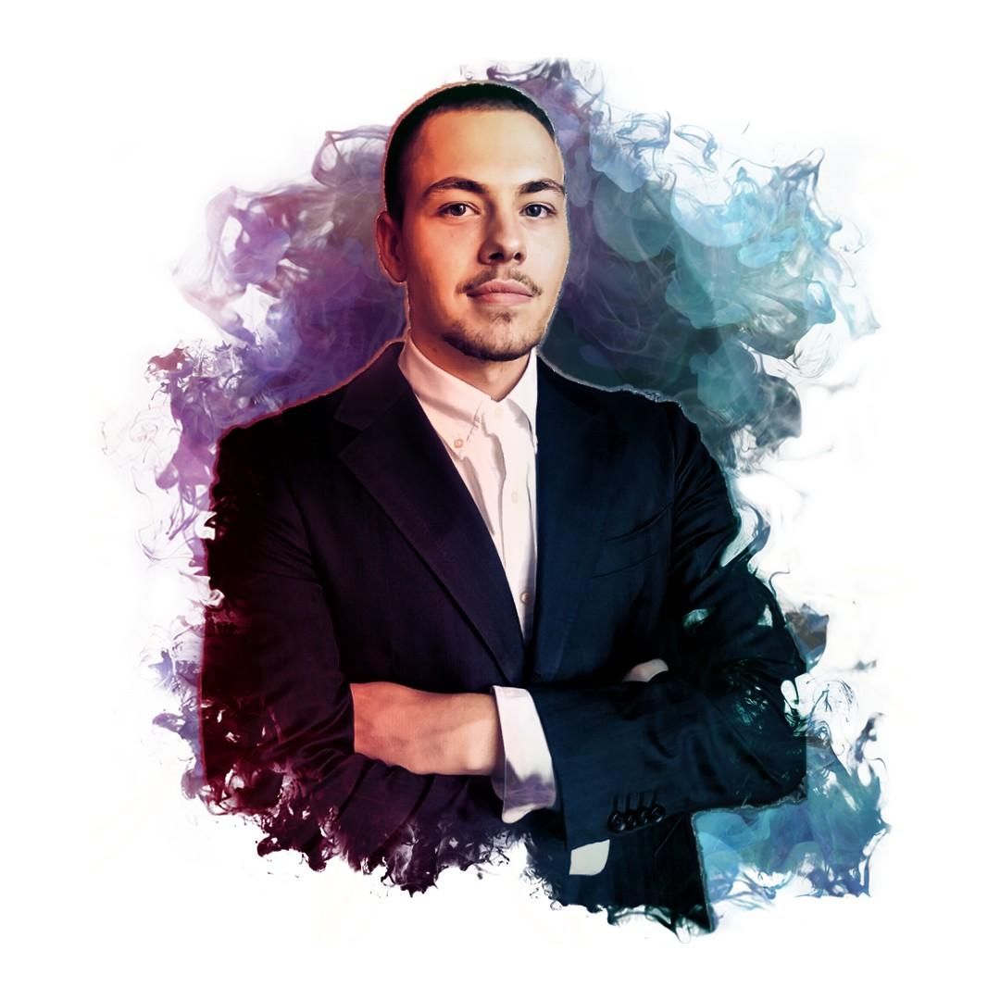

Who I am

Driven by a growth mindset, I'm a fast learner passionate about science, technology, and innovation.
As a proactive knowledge-seeker with long term vision evolving in a rapidly changing world, I'm committed to enhance and expand my skillset through lifelong continuous learning.
My values:
|
Integrity
|
Authenticity
|
Resilience
|
Perseverance
|
Adaptability
|
|
Vision
|
Innovation
|
Strategic Thinking
|
Emotional Intelligence/Empathy
|
Mindfulness
|
——————————————————————
Click ⇣ to learn more about my interests and transferable skills.
Personal Interests & Transferable Skills
Main Areas of Interest:
| Nature | Investing | AI/coding | Biology | Fighting | Meditation |
My Free Time Is Spent Between:
Nature Exploration
: I regularly enjoy outdoor adventures with mypartner
and ourblack cat
, with a particular interest inhiking through biodiverse forests
.— My
happiness
source
.Personal Investment Portfolio Management
: I manage a long term stock portfolio focused on high-impact sectors, includingAI
,Robotics/Automation
,End-to-End Space
,Biotechs
,Clean Energy/Storage
,Quantum Techs
, andRecycling Innovations
.—
Long term vision
,continuous research
,strategic thinking
,emotional control
.AI and Coding Projects
: I strive to build projects to deepen my expertise inAI and Python
, with a strong commitment tocontinuous learning
andinnovation
.—
Project management
,innovation
,problem solving
,critical thinking
,adaptability
.Biology/Biotechs
: Since childhood, I have been deeplypassionate
about the living world at various scales, dedicating my academic career to studyingbiology
. Leveraging nature's mechanisms to engineer innovative solutions is a source of deep fascination for me.—
Research skills
,project management
,analytical/critical thinking
,innovation
,technical proficiency
.Martial Arts and Fitness
: My primary focus is onMuay Thai
(fists, feet, elbows, and knees), but I aspire to expand my skills into grappling and Brazilian jiu-jitsu someday.—
Confidence
,emotional control
,focus
,resilience
,discipline
.Meditation Practice
: My patner introduced me to the journey, I am now anadvanced
practitioner ofmeditation
, striving to achieve higher levels ofmindfulness
andconsciousness
.—
Emotional regulation
,focus
,mindfulness
,stress management
,perspectives
.
 Engagement
Engagement
: Recently, I have actively engaged on 𝕏
to make apositive
andmeaningful impact
while refining mycommunication skills
.—